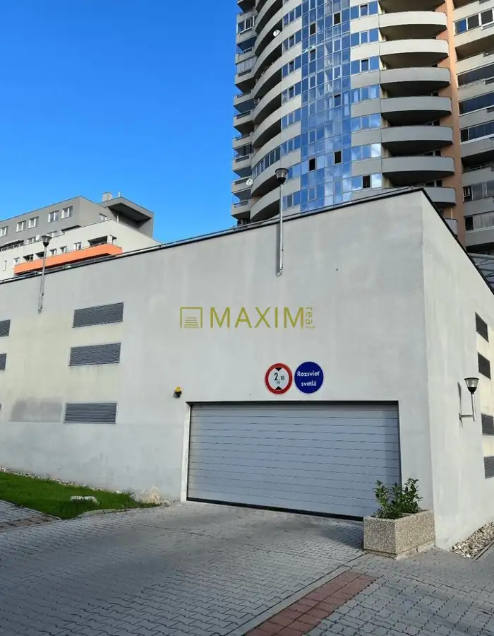
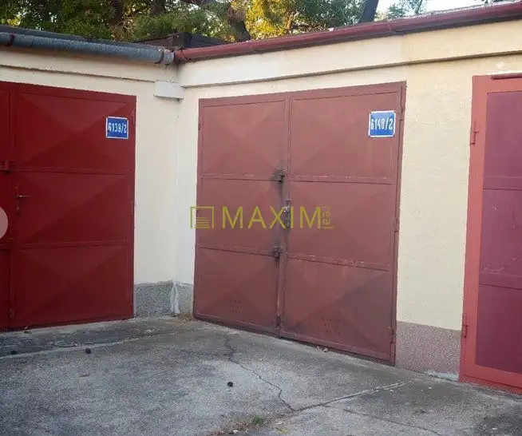
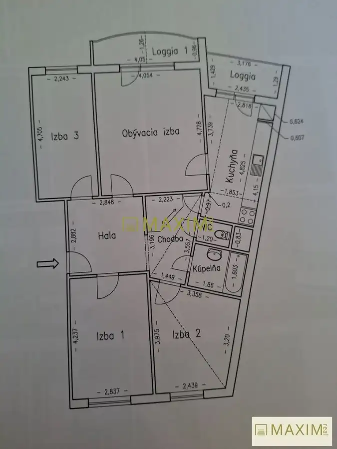

PREDAJ - 2- izbový byt na Cementárenskej ul. s terasou a garáž. státím
Stupava
- Dispozícia2-izbový
- Plocha43 m²
- Poschodie1. z 4
- StavNovostavba
- VlastníctvoOsobné
O nehnuteľnosti
Ponúkame na predaj nový 2-izbový apartmán v novostavbe na Cementárenskej ulici v Stupave. Apartmán sa nachádza na 1. poschodí a má výmeru 43 m². Veľkou výhodou je priestranná terasa s výmerou 20 m², ktorá ponúka dostatok priestoru na oddych a príjemné posedenie.Apartmán je veľmi dobre dispozične riešený a ponúka moderné a praktické bývanie. V cene je zahrnuté parkovacie miesto v podzemnej garáži a exteriérové žalúzie. K dispozícii je aj kúpeľňa pripravená na dokončenie podľa predstáv nového majiteľa, bez sanity.Nehnuteľnosť je vhodná na vlastné bývanie aj ako investícia na prenájom. Výhodou je kombinácia novostavby, veľkej terasy a garážového parkovania v obľúbenej lokalite Stupavy.Cena nehnuteľnosti je 180.000,-Eur vo vyhotovení štandard. A bude k nej pripočítaná sprostredkovateľská odmena vo výške 5.000,- Eur, v ktorej sú zahrnuté aj všetky poplatky, právny a hypotekárny servis. Cena nehnuteľnosti so sprostredkovateľskou odmenou je spolu 185.000,-Eur celkom.Kontakt: Alexandra Katonová, katonova@maximreal.sk, tel.: 0911 896 465- Kúpou získavate dobre dispozične riešenie nehnuteľnosti- Komfortne, rýchlo a na pešo dostupnosť všetkých služieb a zastávky MHDPrečo kupovať nehnuteľnosť prostredníctvom realitnej kancelárie Maxim Real?- Cena nehnuteľnosti je pre Vás konečná - neplatíte žiadne poplatky spojené s predajom a prevodom nehnuteľnosti.- Okrem bezplatného advokátskeho servisu, spracovania kúpno-predajných zmlúv , spracovania návrhu na vklad do katastra, hradíme tiež poplatky za podanie návrhu na vklad do katastra, správne poplatky za výpis z listu vlastníctva a poplatky za podpisy na kúpnych zmluvách.- K dispozícii je Vám hypotekárny špecialista, ktorý pohodlne zariadi Vašu hypotéku a vo väčšine prípadov dojednáva výhodnejšie podmienky, ako keď si klient hypotéku vybavuje sám. Jeho služby sú pre Vás zdarma a navyše máte v tomto prípade aj znalecký posudok zdarma.- Kompletný servis máte vyriešený pohodlne a bezpečne
Parametre
| Cena vrátane energií | Nie |
|---|---|
| Druh | 2 izbový byt |
| Dátum zverejnenia | 7. 10. 2026 |
| Energetický certifikát budovy | nie je |
| Podlažie | 1 |
| Počet nadzemných podlaží | 4 |
| Rok výstavby | 2026 |
| Stav nehnuteľnosti | Novostavba |
| Typ | Predaj |
| Typ konštrukcie | Iná |
| Umiestnenie | Ďalšie nadzemné podlažie |
| Vlastníctvo | Osobné |
| Vybavenie | Terasa |
| Úžitková plocha | 43 m² |
Kde to je


Mohlo by Vás zaujímať

Komerčné priestoryNové 35 000 €Garážové státie na Majerníkovej ulici Karlova Ves, Bratislava 18.69 m² Ponúkame na predaj vnútorné garážové parkovacie státie s výmerou 18,69 m² v bytovom komplexe Oberon na Majerníkovej ulici v Bratislave – Dlhých…
Komerčné priestoryNové3 34 000 €Garáž na ulici Uránová Ružinov, Bratislava 19 m² Ponúkame na predaj staršiu, zachovalú garáž na Ostredkoch, na Uránovej ulici v Bratislave – Ružinove, s výmerou približne 19 m².Garáž je čistá, suchá…
BytNové 345 000 €Pekný 4- izbový byt s loggiou na ulici Veternicová, Dlhé Diely Karlova Ves, Bratislava 4-izbový89 m²4. podlažie Ponúkame na predaj pekný, zachovalý 4-izbový byt s loggiou na Veternicovej ulici v obľúbenej lokalite Bratislava – Karlova Ves, Dlhé diely.Byt s…